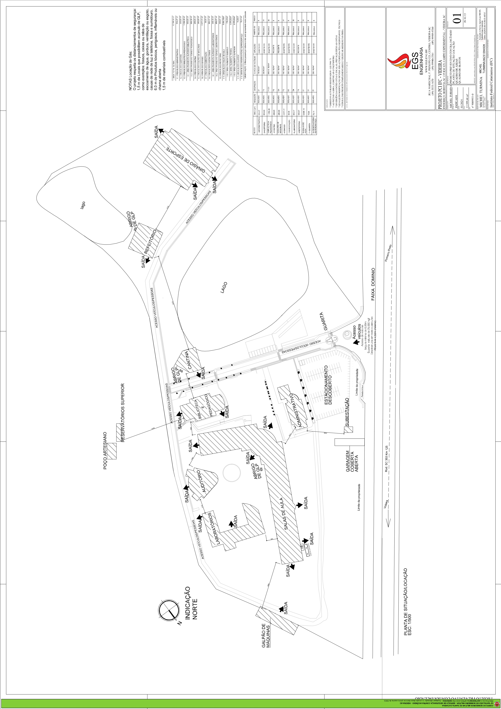

Ponto de Partida: Nenhum
Ponto de Chegada: Nenhum
Distância entre os pontos: 0
Tempo de Execução: 0 ms
Clique nos pontos do mapa para selecionar a origem e o destino.

Ponto de Partida: Nenhum
Ponto de Chegada: Nenhum
Distância entre os pontos: 0
Tempo de Execução: 0 ms